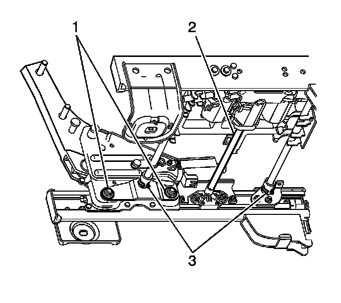

Front Seat Adjuster Replacement
Front Seat Adjuster Replacement
Removal Procedure
Caution: Refer to SIR Caution (SIR Caution) .
1. Remove the front bucket seat. Refer to Bucket Seat Replacement (Bucket Seat Replacement) .
2. Remove the front seat cushion. Refer to Front Seat Cushion Replacement (Front Seat Cushion Replacement) .

3. Remove the seat back frame from the seat adjuster. Refer to Front Seat Back Frame Replacement (Front Seat Back Frame Replacement) .
4. Remove the seat cushion frame from the seat adjuster.
Installation Procedure
1. Install the seat cushion frame to the seat adjuster.
2. Install the seat back frame to the seat adjuster. Refer to Front Seat Back Frame Replacement (Front Seat Back Frame Replacement) .
3. Install the front seat cushion. Refer to Front Seat Cushion Replacement (Front Seat Cushion Replacement) .
4. Install the front bucket seat. Refer to Bucket Seat Replacement (Bucket Seat Replacement) .
5. If the vehicle is equipped with memory seats, calibrate the seat. Refer to Memory Seat Calibration (Programming and Relearning) .